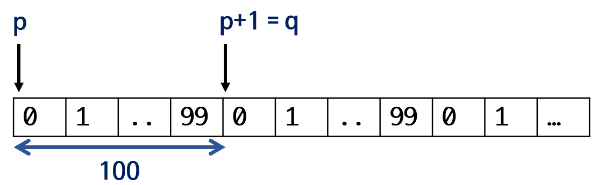

aliasing restrict pointer
1 minute read
에일리어싱과 restrict 포인터
- 에일리어싱: 어떤 한 공간에 대해 복수 개의 접근 경로가 있는 경우를 의미한다.
- *P: 포인터 P가 있고 그 객체가 100이라는 길이를 가진다고 가정한다.
- P+1 = Q라고 지칭한다면 이를 에일리어싱 되었다고 합니다.

- 형변환(type casting)을 위한 최적화를 방해하거나 문제를 일으킬 소지도 있습니다.
- 인수로 받아들이는 주소가 에일리어싱 되었을 때 오류를 방지 위해 미리 검사하는 행위 때문에 성능 저하가 발생
- int *i_form 은 int형 변수를 에일리어싱하는 변수
- 함수 인수가 다른 곳에서 참조하지 않음을 보장해주다면 1.내부적으로 병렬처리하거나 2.에일리어싱에 대한 검사를 하지 않아도 되므로 상당히 효율적으로 함수를 설계할 수 있다.
restrict 포인터
- restrict 포인터: 최적화, 신뢰성 있는 코드를 위해..
- API가 최적화나 신뢰성을 높이기 위해 독점적으로 인수로 넘어오는 메모리에 접근해야 할 필요성
"과거 memcpy"
void *memcpy(void *dest, const void *src, size_t n);
"C99 이후 memcpy"
void *memcpy(void *restrict s1, const void *restrict s2, size_t n);
- restrict 포인터로 객체를 다른 공간에서 에일리어싱하지 않도록 강제함
- implementation이 내부적으로 s1, s2 의 접근이 비순차, 비동기적으로 진행, 병렬처리 될 수 있음 암시
- 과거 memcpy는 비동기적 진행 X, 일일이 메모리 위치를 확인하는 작업도 한다. 이는 심각한 오버헤드 유발
- 에일리어싱을 사용하지 않음을 확신할 수 없다면, memcpy대신 memmove를 사용하도록 강요
int *p_num, *p_alias;
p_num = (int *)malloc(sizeof(int) * 100);
p_alias = p_num + 20; /* 에일리어싱 되었음 */
memcpy(p_num, p_alias, sizeof(int) * 50);
- p_num, p_alias는 에일리어싱 되었으므로 restrict 포인터 룰 위반, 사이드 이펙트 발생 가능성